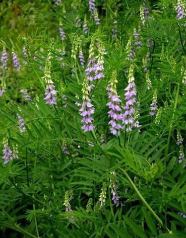

Basonym of Drug
Yashtimadhu
Main Synonym
- Klitaka
- Madhuka
- Yastimadhuka
- Atyantklitaka
- Jalayaasti
- Madhuyasti
- Madhulika
Regional Name
- Bengali: Yashtimadhu
- Gujarati: Jethimadha
- Hindi: Mulehthi, Mithi Lakdi
- Punjabi: Muleti
- Tamil: Atimadhura
- Telugu: Yashtimadhuka
- English: Licorice Root
Botanical Name
Glycyrrhiza glabra Linn
Family
Leguminoceae
Classification (Gana)
- Aacharya Charaka: Mutravirajaniya, Jivaniya, Kandughna, Sandhaniya, Varnya, Kanthya, Chardinigrahana, Sonitasthapana, Snehopaga, Vamanopaga, Asthapanopaga Mahakashaya
- Aacharya Sushruta: Sarivadi, Kakolyadi, Anjanadi Gana
- Aacharya Vagbhata: Sarivadi, Anjanadi Gana
External Morphology
1-2 meter high strong undershrub
Useful Parts
Important Phytoconstituent
- Glycyrrhizin
- Liquirtin
- Glycyrrhizic Acid
- Liquiritogenin
- Licuraside
- Glabrolide
- Glabrane
Rasa Panchak
- Rasa: Madhura
- Guna: Snigdha, Guru
- Virya: Shita
- Vipaka: Madhura
Action
Tridoshahara
Therapeutic Indication
- Balya (Strengthening)
- Vrushya (Aphrodisiac)
- Brumhana (Nourishing)
- Varnya (Good for Skin)
- Kanthya (Good for Throat)
- Chakshushya (Eye-tonic)
- Vranaropana (Wound-healing)
- Trishnahara (Reduce Excessive Thirst)
- Kshayahara (Useful to Treat Tuberculosis and Other Malnutrition Diseases)
Therapeutic Uses
- Hridroga - Yashtimadhu with Katuki is given in cold water for cardiac diseases.
- Mutrakrichha - Yashtimadhu powder with Ikshumoola juice is given in burning micturition.
- Amlapitta - Powder with rock sugar is beneficial in hyperacidity.
Dose
Powder: 3-5 gm
Formulations
- Yashtimadhu Ghanvati
- Madhuyastyadi Taila
- Shatapakamadhuka Taila
- Yastyadi Churna
Adverse Effect
Not Known
Remedial Measure
Not required
Purification
Not required